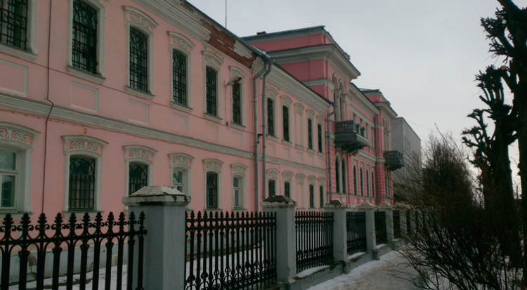

Серпухов
1.Серпуховской историко-художественный музей
Любителям истории и искусства можно посетить Серпуховской историко-художественный музей (на англ. Serpukhov History and Art Museum). Он был открыт в 1920 году на основе богатой коллекции купцов Мараевых, которые занимались текстильной промышленностью.
Здание, в котором находится музей, было построено в начале 20 века и принадлежало семье этих купцов. Для того чтобы создать первую экспозицию, ценные предметы истории приходилось искать во всех окрестных усадьбах.
В настоящее время коллекция состоит из 40 тысяч экспонатов, которые разделены на две большие тематические группы: русское искусство 18-20 веков и западноевропейское искусство 16-19 веков. Отдельное внимание привлекают предметы, которые имеют отношение к истории становления и развития города.

2.Павленское озеро
Одним из самых любимых мест для отдыха местных жителей является Павленское озеро или Цимлянский карьер. Свое название оно получило из-за того, что образовано на месте песчаного карьера. Площадь водоема составляет около 1,2 квадратных километра, а максимальная глубина достигает 4 метров.
Павленское озеро очень чистое благодаря протоке, соединяющейся с Окой. Из-за этого здесь обитает огромное количество всевозможных видов рыб: окуни, ерши, лещи, плотва и другими. В любое время года сюда приезжают рыбаки со всей округи.
3.Музей павлина
Любители истории прекрасно проведут время в музее павлина. Свое необычное название он получил из-за того, что посвящен этой прекрасной птице. Она является символом Серпухова и изображена на гербе города.
Музей был открыт в 2006 году в честь празднования 225-й годовщины основания города. Коллекция состоит из 80 экспонатов, которые могут рассказать о павлине и его роли в становлении Серпухова. Всем посетителям предлагают посмотреть документальные фильмы о создании герба и отечественные мультфильмы с этой птицей.
Для детей проводят необычные мастер-классы, а все желающие могут сделать рисунок павлина на бумаге и повесить его в коллекцию. Опытные экскурсоводы расскажут очень интересные факты из истории города, которые раскроют нам тайну появления этого необычного символа города.
4.Серпуховский кремль
Одной из древнейших построек города является Серпуховский кремль (на англ. Serpukhov Kremlin). Его первые стены были сделаны из дубовых бревен в 1374 году. Он был возведен для защиты окрестных земель от набегов.
В 1556 году деревянные бревна были заменены на высокие каменные стены. Белокаменный кремль сразу стал главной оборонительной цитаделью города. В конце 18 века он утратил свою основную функцию, поэтому постройки начинают сильно ветшать. В 1934 году стены кремля были разобраны в качестве строительного материала для Московского метрополитена.
В настоящее время от защитного сооружения остались лишь небольшие фрагменты стен и фундамента. На территории кремля ведутся раскопки, во время которых археологи находят предметы, оружие 16-18 веков. Единственным сохранившимся зданием внутри цитадели является Троицкий собор, в котором после реконструкции проходят богослужения и таинства.
5.Собор Николая Чудотворца Белого
Одним из красивейших сооружений города является собор Николая Чудотворца Белого. Он был основан в 16 веке. Изначально на этом месте была небольшая деревянная церковь, но после большого пожара она была полностью уничтожена. В 1610 году на ее месте был возведен белокаменный храм, именно поэтому его называют Белым. Со временем здание сильно обветшало.
В 19 веке на месте разрушенного храма построили большой красивый собор, который сохранил в своем облике очертания предыдущего. В 30-е годы 20 века храм закрыли, помещения использовались как склад, поэтому сильно пострадала внутренняя отделка. В 1995 году здание вернулось к своему прямому назначению, а после реставрации собор снова поражал прихожан своим убранством.
Фасад выполнен в стиле московского ампира, его белоснежные стены прекрасно гармонируют с необычными голубыми куполами. Внутреннее убранство представлено иконостасом и росписями.